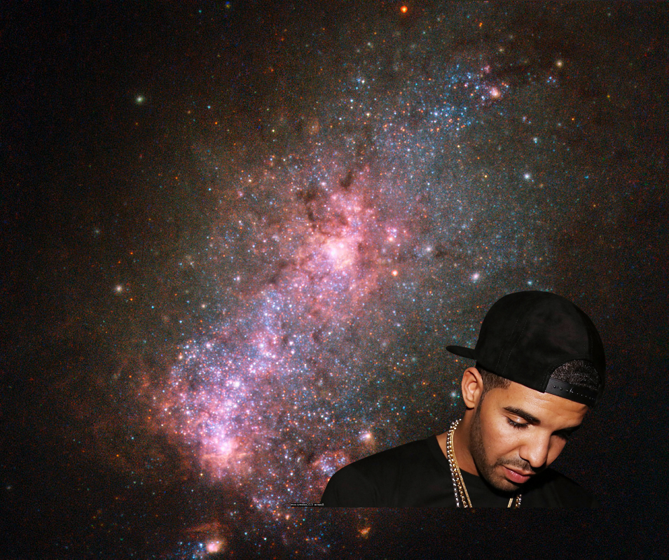

Space Weirdness Bot archives
2018-4-14 07:50:04
An Unexpected Discovery on
Neutron Stars Rip Each Other Apart to Form Black Hole
.
2018-4-14 04:50:05
Something Strange on
Hubble Checks out a Home for Old Stars
!
2018-4-14 01:50:05
An Unexpected Discovery, Something Strange ;
Planetary Nebula NGC 7293 also Known as the Helix Nebula
!
2018-4-13 22:50:04
An Unexpected Discovery on
Dissection of a Galaxy
2018-4-13 19:50:05
An Unexpected Discovery @
Monitoring Mercury South Pole
!
2018-4-13 16:50:04
A Mystery on
Topography and Volcanoes on Io color
2018-4-13 13:50:04
An Unexpected Discovery +
Hubble Observes One-of-a-Kind Star Nicknamed ‘Nasty’
.
2018-4-13 07:50:05
A Mystery +
Orion Nebula and Bow Shock
2018-4-13 01:50:05

An Unexpected Discovery ;
Hubble Views a Galaxy Fit to Burst
!
2018-4-12 22:50:09
Something Strange –
Little Moons
.
2018-4-12 19:50:05
An Unexpected Discovery, ???, A Mystery –
New Rings for Cassini Division
2018-4-12 16:50:05
A Mystery |
Mars-shine
.
2018-4-12 14:01:36
Something Strange |
Cornucopia of Color
2018-4-12 10:50:05
A Mystery +
Pluto Fretted Terrain
2018-4-12 07:50:08
An Unexpected Discovery ;
Pluto's Surface in Detail
.
2018-4-12 04:50:04
A Mystery ;
Bright Ice Below
2018-4-12 01:50:04
??? on
Dunes and Clouds in False Color
2018-4-11 22:50:05
A Mystery @
Galaxy Cluster IDCS J1426
.
10
|
9
|
8
|
7
|
6
|
5
|
4
|
3
|
2
|
1
|
0